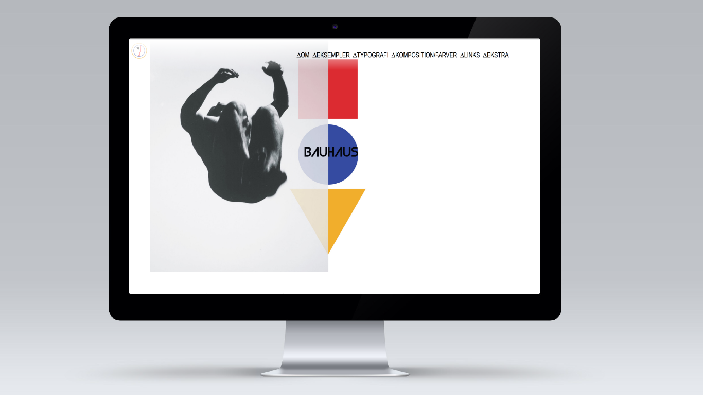

Som første opgave på 1. semester blev vi sat sammen i grupper hvori vi blev tildelt en stilart hver. Det indebar efterfølgende reseach af den tildelte stilart - i dette tilfælde Bauhaus - af farver, typografi og former, som til sidst skulle samles til et færdigt stilartsite, kodet i HTML og CSS.
Efter at vi havde samlet materiale skulle vi til sidst lave et individuelt stilartsite med den gældende stilart. Det skulle kodes i HTML og CSS.Det færdige resultat kan ses ovenfor.
